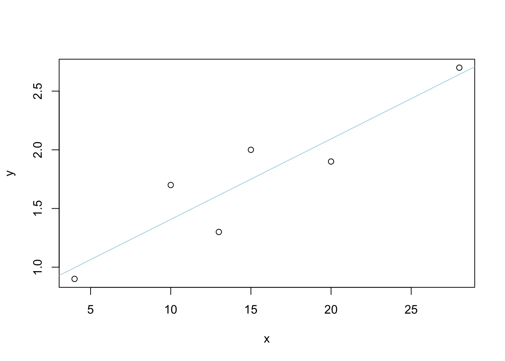
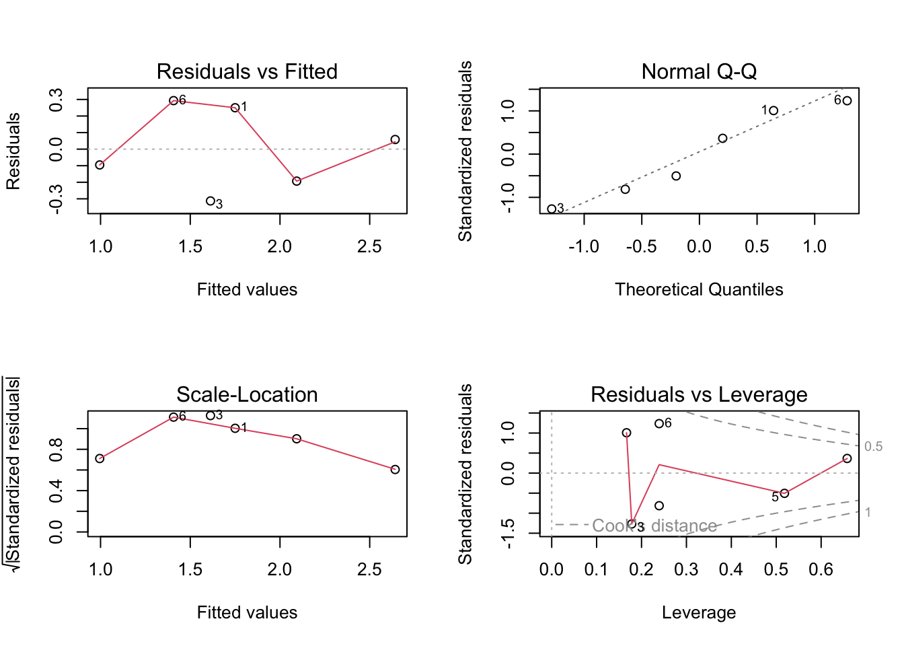
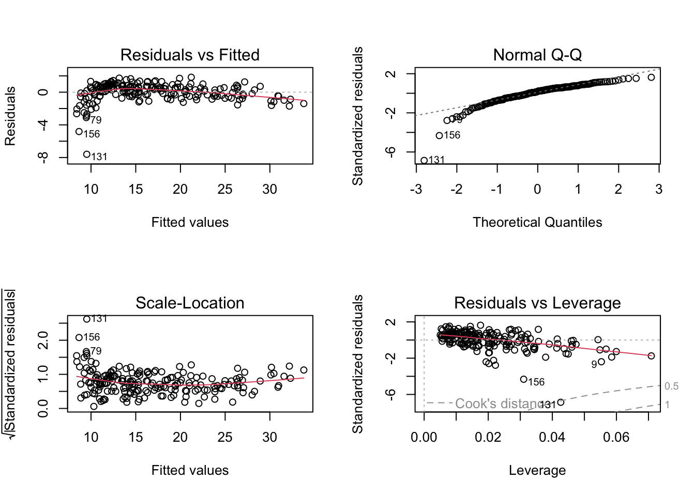
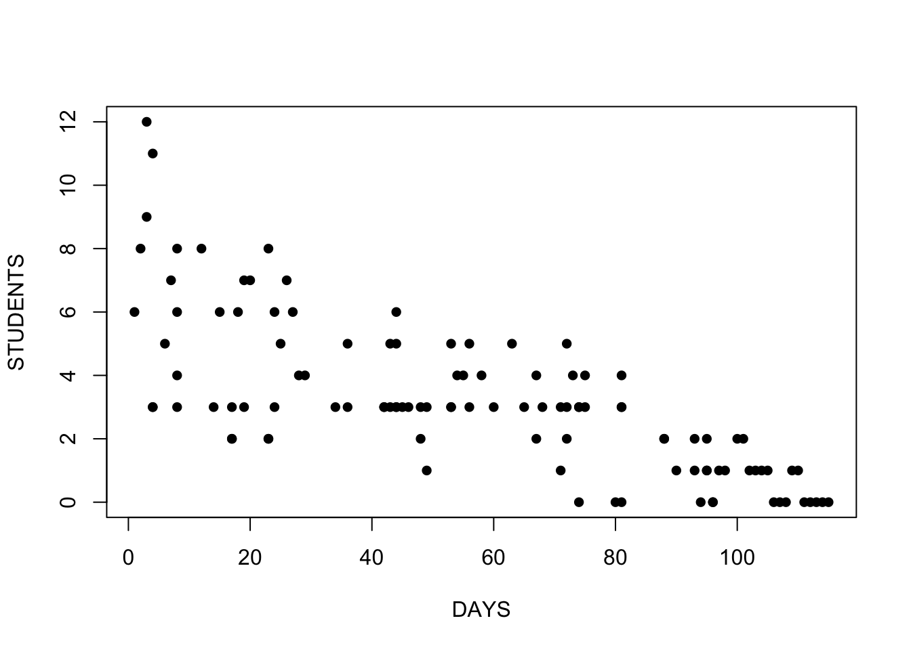
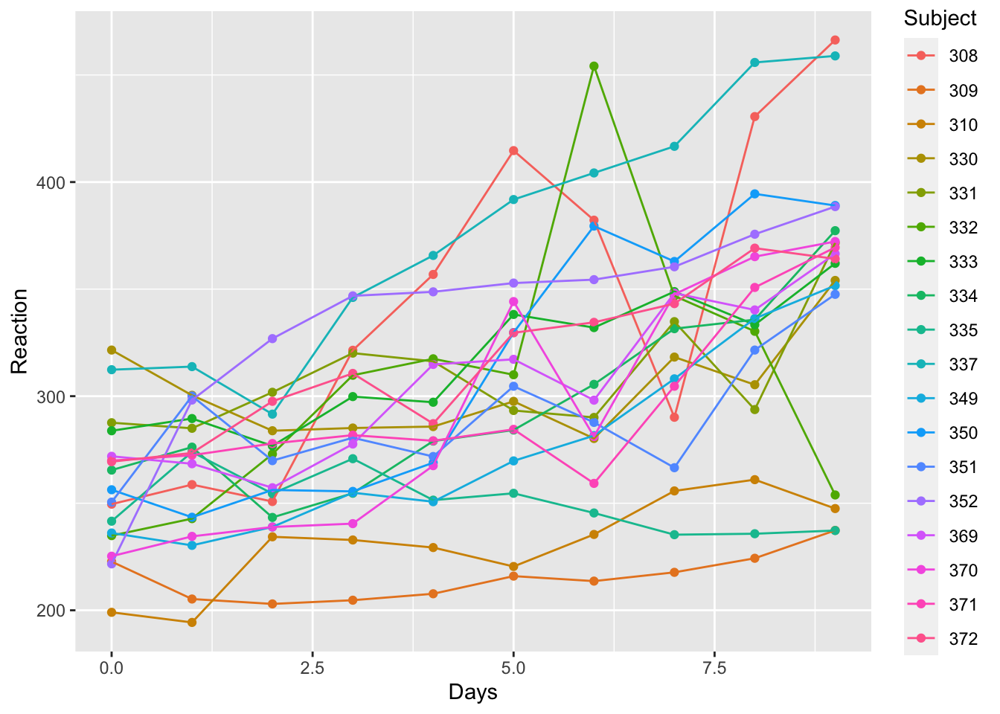

§ Chapter4 Regression
Regression creates a model (
lmfunction)ANOVA (
anovafunction) compares two regression models and reports whether they are significantly different.Model Assumptions
- The true relationship is linear
- Normality of Errors
- Equal Variance of Errors
- Independence of Errors
Model Fit
- Is the model statistically significant?
Check \(F\) statistic. - Are the coefficients significant?
Check the coefficient’s \(t\) statistics and p-values in the summary. - Is the model useful?
Check \(R^2\), measure of the model’s quality. Bigger is better. Mathematically, it is the fraction of the variance of y that is explained by the regression model. - Does the model fit the data well?
Plot the residuals and check the regression. - Does the data satisfy the assumptions behind linear regression?
Check whether the diagnostics confirm that a linear model is reasonable.
- Is the model statistically significant?
4.1 Simple Linear Regression
A simple linear regression is the most basic model. Two vectors, y (response or dependent variable) and x (predictor or independent variable), modeled as a linear relationship with an error term: \(~ Y = β_0 + β_1X + ε\)
☕Example:
Data :【Modern Elementary Statistics (11th Edition): John E. Freund】
The following data show the average number of hours that six students spent on homework per week and their grade-point indexes for the courses they took in that semester:
x <- c(15, 28, 13, 20, 4, 10)
y <- c(2, 2.7, 1.3, 1.9, 0.9, 1.7)
plot(x, y)
abline( lm(y~1+x), col="light blue" )
##
## Call:
## lm(formula = y ~ 1 + x)
##
## Residuals:
## 1 2 3 4 5 6
## 0.25000 0.05814 -0.31279 -0.19302 -0.09535 0.29302
##
## Coefficients:
## Estimate Std. Error t value Pr(>|t|)
## (Intercept) 0.72093 0.24641 2.926 0.04300 *
## x 0.06860 0.01467 4.678 0.00946 **
## ---
## Signif. codes: 0 '***' 0.001 '**' 0.01 '*' 0.05 '.' 0.1 ' ' 1
##
## Residual standard error: 0.272 on 4 degrees of freedom
## Multiple R-squared: 0.8455, Adjusted R-squared: 0.8068
## F-statistic: 21.88 on 1 and 4 DF, p-value: 0.009461The regression equation is \(\hat{y}=0.721+0.069x\)
- \(H_0\): \(\beta_1=0\)
\(H_a\): \(\beta_1\neq0\) - \(\alpha=0.01\)
- The value of the test statistic, t=4.698, p-value=0.009 < 0.01. We conclude that \(\beta_1\neq0\) or there is a linear association between six students spent on homework per week and their grade-point indexes.
- By ANOVA table, since F=21.884, p-value=0.09 < 0.01. We conclude that \(\beta_1\neq0\). This is the same result as when the t test. In simple linear regression. \(F=t^2 ; F(1-\alpha; 1, n-2)=[t(1-\alpha/2; n-2)]^2\)

- The points in the Residuals vs Fitted plot are randomly scattered with no particular pattern.
- The points in the normal Q–Q plot are more or less on the line, indicating that the residuals follow a normal distribution.
- In both the Scale–Location plot and the Residuals vs Leverage plots, the points are in a group with none too far from the center.
4.2 Multiple Linear Regression
Multiple linear regression, where we have multiple variables on the righthand side of the relationship: \(Y = β_0 + β_1X_1+ β_2X_2+ β_3X_3 +ε\)
☕Example:
Data :【Modern Elementary Statistics (11th Edition): John E. Freund; p424】
The following data show the number of bedrooms, the number of baths, and the prices at which eight one-family houses sold recently in a certain community:
mltireg <- data.frame(
x1 <- c(3, 2, 4, 2, 3, 2, 5, 4),
x2 <- c(2, 1, 3, 1, 2, 2, 3, 2),
y <- c(143800, 109300, 158800, 109200,
154700, 114900, 188400, 142900)
)
lm.m <- lm (y ~ x1 + x2, data=mltireg)
summary(lm.m)##
## Call:
## lm(formula = y ~ x1 + x2, data = mltireg)
##
## Residuals:
## 1 2 3 4 5 6 7 8
## 5644 -869 -7343 -969 16544 -6504 5505 -12008
##
## Coefficients:
## Estimate Std. Error t value Pr(>|t|)
## (Intercept) 65430 12134 5.392 0.00296 **
## x1 16752 6636 2.524 0.05288 .
## x2 11234 9885 1.137 0.30724
## ---
## Signif. codes: 0 '***' 0.001 '**' 0.01 '*' 0.05 '.' 0.1 ' ' 1
##
## Residual standard error: 10750 on 5 degrees of freedom
## Multiple R-squared: 0.8941, Adjusted R-squared: 0.8517
## F-statistic: 21.1 on 2 and 5 DF, p-value: 0.003653This tells us that (in the given community at the time the study was being made) each extra bedroom added on the average 16752, and each bath 11234, to the sales price of a house.
The regression equation is \(~\hat{y}= 65430+16752x_1+11234x_2\)
4.2.1 Interactions in Multiple Linear Regression
An interaction occurs when an independent variable has a different effect on the outcome depending on the values of another independent variable.
Interaction Multiple Linear Regression is \[\begin{align*} Y_1&=\beta_0+\beta_1X_1+\beta_2X_2+\beta_3X_1X_2 +\varepsilon \end{align*}\]
☕Example:
We’ll use the marketing data set,for predicting sales units on the basis of the amount of money spent in the three advertising medias (youtube, facebook and newspaper)
# Load the data
data("marketing", package = "datarium")
# Build the model
MarketingModel <- lm(sales ~ youtube + facebook + youtube:facebook,
data = marketing)
summary(MarketingModel)##
## Call:
## lm(formula = sales ~ youtube + facebook + youtube:facebook, data = marketing)
##
## Residuals:
## Min 1Q Median 3Q Max
## -7.6039 -0.4833 0.2197 0.7137 1.8295
##
## Coefficients:
## Estimate Std. Error t value Pr(>|t|)
## (Intercept) 8.100e+00 2.974e-01 27.233 <2e-16 ***
## youtube 1.910e-02 1.504e-03 12.699 <2e-16 ***
## facebook 2.886e-02 8.905e-03 3.241 0.0014 **
## youtube:facebook 9.054e-04 4.368e-05 20.727 <2e-16 ***
## ---
## Signif. codes: 0 '***' 0.001 '**' 0.01 '*' 0.05 '.' 0.1 ' ' 1
##
## Residual standard error: 1.132 on 196 degrees of freedom
## Multiple R-squared: 0.9678, Adjusted R-squared: 0.9673
## F-statistic: 1963 on 3 and 196 DF, p-value: < 2.2e-16
The marketing model equation:
\(Sales = 8.1 + 0.019* Youtube + 0.028* Facebook + 0.0009 *Youtube * Facebook\)
We can interpret this as an increase in youtube advertising of 1000 dollars is associated with increased sales of (\(\beta_1\) + \(\beta_3\)Facebook)×1000 = 19 + 0.9facebook units. And an increase in facebook advertising of 1000 dollars will be associated with an increase in sales of (\(\beta_2\) + \(\beta_3\)youtube)×1000 = 28 + 0.9youtube units.
4.3 Multivariable Linear Regression
Multivariate multiple linear model is
\[\begin{align*} Y_1&=\beta_{11}X_1+\cdots+\beta_{p1}X_p+\varepsilon_1, \\ & \vdots\\ Y_q&=\beta_{1q}X_1+\cdots+\beta_{pq}X_p+\varepsilon_q, \end{align*}\]
☕Example:
Iris data set
mlmIris <- lm(cbind(Petal.Width, Petal.Length) ~
Sepal.Length + Sepal.Width + Species, data = iris)
summary(mlmIris)## Response Petal.Width :
##
## Call:
## lm(formula = Petal.Width ~ Sepal.Length + Sepal.Width + Species,
## data = iris)
##
## Residuals:
## Min 1Q Median 3Q Max
## -0.50805 -0.10042 -0.01221 0.11416 0.46455
##
## Coefficients:
## Estimate Std. Error t value Pr(>|t|)
## (Intercept) -0.86897 0.16985 -5.116 9.73e-07 ***
## Sepal.Length 0.06360 0.03395 1.873 0.063 .
## Sepal.Width 0.23237 0.05145 4.516 1.29e-05 ***
## Speciesversicolor 1.17375 0.06758 17.367 < 2e-16 ***
## Speciesvirginica 1.78487 0.07779 22.944 < 2e-16 ***
## ---
## Signif. codes: 0 '***' 0.001 '**' 0.01 '*' 0.05 '.' 0.1 ' ' 1
##
## Residual standard error: 0.1797 on 145 degrees of freedom
## Multiple R-squared: 0.9459, Adjusted R-squared: 0.9444
## F-statistic: 634.3 on 4 and 145 DF, p-value: < 2.2e-16
##
##
## Response Petal.Length :
##
## Call:
## lm(formula = Petal.Length ~ Sepal.Length + Sepal.Width + Species,
## data = iris)
##
## Residuals:
## Min 1Q Median 3Q Max
## -0.75196 -0.18755 0.00432 0.16965 0.79580
##
## Coefficients:
## Estimate Std. Error t value Pr(>|t|)
## (Intercept) -1.63430 0.26783 -6.102 9.08e-09 ***
## Sepal.Length 0.64631 0.05353 12.073 < 2e-16 ***
## Sepal.Width -0.04058 0.08113 -0.500 0.618
## Speciesversicolor 2.17023 0.10657 20.364 < 2e-16 ***
## Speciesvirginica 3.04911 0.12267 24.857 < 2e-16 ***
## ---
## Signif. codes: 0 '***' 0.001 '**' 0.01 '*' 0.05 '.' 0.1 ' ' 1
##
## Residual standard error: 0.2833 on 145 degrees of freedom
## Multiple R-squared: 0.9749, Adjusted R-squared: 0.9742
## F-statistic: 1410 on 4 and 145 DF, p-value: < 2.2e-16R will perform encoding of categorical variables automatically as long as it knows that the variable being put into the regression should be treated as a categorical variable.
The \(β\) will be the difference between the categories.
For example of Iris data, Species is categorical variable.
The regression equation is
For Petal.Width : \(Y_{Petal.Width} = -0.87 + 0.06Sepal.Length + 0.23Sepal.Width + 1.17375Species_{versicolor} + 1.78 Species_{virginica}\)
For Petal.Length : \(Y_{Petal.Length} = -1.63 + 0.65Sepal.Length - 0.04Sepal.Width + 2.17Species_{versicolor} + 3.01 Species_{virginica}\)
4.4 Logistic Regression
Logistic regression, also called logit model, is used when response variable is categorical, binary (yes/no or success/failure) or binomial (number of successes in n trials).
In the logistic regression, the log odds of outcome is modeled as a linear combination of the predictor variables (x).
The Logistic function
\[\begin{align*} & f(x)=\frac{1}{e^{-(\beta_0+\beta_1x)}} \\ & p= \frac{1}{e^{-(\beta_0+\beta_1x)}} = \frac{1} {1+ \frac{1}{e^{\beta_0+\beta_1x} } } = \frac {e^{\beta_0+\beta_1x}} {e^{\beta_0+\beta_1x} +1} ~~~~ ➜ ~~~~ odds: \frac {p}{1-p} = e^{\beta_0+\beta_1x} \end{align*}\]
logit function of odds
\[\begin{align*} & log_e (\frac {p}{1-p}) = ln(e^{\beta_0+\beta_1x}) = \beta_0+\beta_1x \\ & \frac { odds (x+1) }{ odds (x) } = \frac { \frac {p(x+1)}{1-p(x+1)} } { \frac {p(x)}{1-p(x)} } = \frac { e^{\beta_0+\beta_1(x+1) } } { e^{\beta_0+\beta_1x} } = e^{\beta_1} ~~~~ ➜ ~~~~ ln (\frac { odds (x+1) }{ odds (x) }) = \beta_1 \end{align*}\]
4.4.1 Binomial Logistic Regression
Binomial logistic regression is used to model dichotomous ( 2 categories) outcome variables.
☕Example:
Data: https://stats.idre.ucla.edu/r/dae/logit-regression/
A researcher is interested in how variables, such as GRE (Graduate Record Exam scores), GPA (grade point average) and prestige of the undergraduate institution, effect admission into graduate school. The response variable, admit/don’t admit, is a binary variable.
- 1 binary response (outcome, dependent) variable: admit.
- 3 predictor variables: gre, gpa and rank, gre and gpa as continuous. The variable rank takes on the values 1 through 4.
gredata <- read.csv("data/logit.csv", header=TRUE)
# rank to a factor to indicate that rank should be treated as a categorical variable.
gredata$rank <- factor(gredata$rank)
grelogit <- glm(admit ~ gre + gpa + rank, data = gredata, family = "binomial")
summary(grelogit)##
## Call:
## glm(formula = admit ~ gre + gpa + rank, family = "binomial",
## data = gredata)
##
## Deviance Residuals:
## Min 1Q Median 3Q Max
## -1.6268 -0.8662 -0.6388 1.1490 2.0790
##
## Coefficients:
## Estimate Std. Error z value Pr(>|z|)
## (Intercept) -3.989979 1.139951 -3.500 0.000465 ***
## gre 0.002264 0.001094 2.070 0.038465 *
## gpa 0.804038 0.331819 2.423 0.015388 *
## rank2 -0.675443 0.316490 -2.134 0.032829 *
## rank3 -1.340204 0.345306 -3.881 0.000104 ***
## rank4 -1.551464 0.417832 -3.713 0.000205 ***
## ---
## Signif. codes: 0 '***' 0.001 '**' 0.01 '*' 0.05 '.' 0.1 ' ' 1
##
## (Dispersion parameter for binomial family taken to be 1)
##
## Null deviance: 499.98 on 399 degrees of freedom
## Residual deviance: 458.52 on 394 degrees of freedom
## AIC: 470.52
##
## Number of Fisher Scoring iterations: 4The logistic regression coefficients give the change in the log odds of the outcome for a one unit increase in the predictor variable.
- For every one unit change in
gre, the log odds of admission (versus non-admission) increases by0.002. - For a one unit increase in
gpa, the log odds of being admitted to graduate school increases by0.804. - The indicator variables for rank have a slightly different interpretation. For example, having attended an undergraduate institution
with rank of 2, versus an institution with a rank of 1, changes the log odds of admission by-0.675.
## (Intercept) gre gpa rank2 rank3 rank4
## 0.0185001 1.0022670 2.2345448 0.5089310 0.2617923 0.2119375- For a one unit increase in
gre, the odds of admission (versus non-admission) increases by1.0023. - For a one unit increase in
gpa, the odds of being admitted to graduate school increases by2.23. - For attended an undergraduate institution
with rank of 2, versus an institution with a rank of 1, changes the odds of admission by0.5.
To test overall effect of rank , we can use the wald.test function.
##
## Attaching package: 'aod'## The following object is masked from 'package:datarium':
##
## mice# b supplies the coefficients
# Sigma supplies the variance covariance matrix of the error terms
# Terms in the model are to be tested, terms 4, 5, and 6, are the levels of rank.
wald.test(b = coef(grelogit), Sigma = vcov(grelogit), Terms = 4:6)## Wald test:
## ----------
##
## Chi-squared test:
## X2 = 20.9, df = 3, P(> X2) = 0.00011The chi-squared test statistic of 20.9, with three degrees of freedom is associated with a p-value of 0.00011 indicating that the overall effect of rank is statistically significant.
To measure of model fit is the significance of the overall model. This test asks whether the model with predictors fits significantly better than a model with just an intercept (i.e., a null model). The test statistic is the difference between the residual deviance for the model with predictors and the null model. The test statistic is distributed chi-squared with degrees of freedom equal to the differences in degrees of freedom between the current and the null model
# find the difference in deviance for the two models
with(grelogit, null.deviance - deviance)
# degrees of freedom for the difference
with(grelogit, df.null - df.residual)# p-value can be obtained using
with(grelogit, pchisq(null.deviance - deviance, df.null - df.residual,
lower.tail = FALSE))## [1] 7.578194e-08The chi-square of 41.46 with 5 degrees of freedom and an associated p-value of less than 0.001 tells us that our model as a whole fits significantly better than an empty model.
4.4.2 Multinomial Logistic Regression
Multinomial logistic regression is used when response variable is categorical more than 2 levels.
The analysis breaks the outcome variable down into a series of comparisons between two categories.
Suppose the response variable Y is k categories, 1, 2, …, k such (k>2).
\[\begin{align*} & P(Y=1) =p_1, P(Y=2)=p_2, ...., P(Y=k)=p_k, ~~ such ~ that~~ \sum_{I=1}^{k}p_i =1 \\ & choose ~ baseline ~ category:~ Y=k \\ & log (\frac {p_1}{p_k}) = log(e^{\beta_0+\beta_1x}) = \beta_{01}+\beta_{11}x \\ & log (\frac {p_2}{p_k}) = log(e^{\beta_0+\beta_1x}) = \beta_{02}+\beta_{12}x \\ &~~~~~~ ⋮ \\ & log (\frac {p_{k-1}}{p_k}) = log(e^{\beta_0+\beta_1x}) = \beta_{0(k-1)}+\beta_{1(k-1)}x \\ \\ & now ~ let ~ odds: \frac {p_1}{p_k} \\ & \frac { odds (x+1) }{ odds (x) } = \frac { \frac {p_1(x+1)}{p_k(x+1)} } { \frac {p_1(x)}{p_k(x)} } = \frac { e^{\beta_{01}+\beta_{11}(x+1) } } { e^{\beta_{01}+\beta_{11}x} } = e^{\beta_{11} } ~~~~ ➜ ~~~~ ln (\frac { odds (x+1) }{ odds (x) }) = \beta_{11} \end{align*}\]
When X increases one unit, the log odds of Y=1 versus baseline Y=k are expected to multiply by \(\beta_{11}\).
☕Example:
The data set contains variables on 200 students.
The outcome variable is prog, program type (1=general, 2=academic, 3=vocational)
The predictor variables are social economic status, ses (1=low, 2=middle, 3=high, three-level categorical variable), and writing score, write, a continuous variable.
hsbdata <- read.csv("data/hsbdemo.csv", header=TRUE)
# Load the multinom package
library(nnet)
# set the reference group
hsbdata$prog2 <- relevel(as.factor(hsbdata$prog), ref = "academic")
hsbdata$ses2 <- relevel(as.factor(hsbdata$ses), ref = "low")
# Run a multinomial model
hsblogit <- multinom(prog2 ~ ses2 + write, data = hsbdata, model=TRUE)## # weights: 15 (8 variable)
## initial value 219.722458
## iter 10 value 179.982880
## final value 179.981726
## converged## Call:
## multinom(formula = prog2 ~ ses2 + write, data = hsbdata, model = TRUE)
##
## Coefficients:
## (Intercept) ses2high ses2middle write
## general 2.852198 -1.1628226 -0.5332810 -0.0579287
## vocation 5.218260 -0.9826649 0.2913859 -0.1136037
##
## Std. Errors:
## (Intercept) ses2high ses2middle write
## general 1.166441 0.5142196 0.4437323 0.02141097
## vocation 1.163552 0.5955665 0.4763739 0.02221996
##
## Residual Deviance: 359.9635
## AIC: 375.9635The output above has two parts,
\(ln\left(\frac{P(prog=general)}{P(prog=academic)}\right) = b_{10} + b_{11}(ses=high) + b_{12}(ses=middle) + b_{13}write\)
\(ln\left(\frac{P(prog=vocation)}{P(prog=academic)}\right) = b_{20} + b_{21}(ses=high) + b_{22}(ses=middle) + b_{23}write\)
- The relative log odds of being in
general program vs. in academic programwilldecrease 1.163if moving from the lowest level of ses to the highest level of ses. - A one-unit increase in the variable write is associated with a
.058 decreasein the relative log odds of being ingeneral program vs. academic program. - A one-unit increase in the variable write is associated with a
.1136 decreasein the relative log odds of being invocation program vs. academic program.
4.4.3 Ordinal Logistic Regression
Ordinal Logistic Regression is used when response variable is single ordered categorical.
Suppose the response variable Y is ordinal outcome with J categories.
\(P(Y \le j)\) is the cumulative probability of Y less than or equal to a specific category \(j = 1, 2...,J-1\)
The odds can be defined as
\[\begin{align*} \frac{P(Y \le j)}{P(Y>j)}, ~~where~ P(Y >j) = 1 – P(Y \le j) \end{align*}\]
Due to the parallel lines assumption, the ordinal logistic regression model can be defined as
\[\begin{align*} ln (\frac{P(Y \le j)}{P(Y>j)}) = \beta_{j0} + \beta_{1}x_1 + \cdots + \beta_{p} x_p. \end{align*}\]
In R (polr), the ordinal logistic regression model is parameterized as
\[\begin{align*} & ln (\frac{P(Y \le j)}{P(Y>j)}) = \beta_{j0} ~–~ \eta_{1}x_1 ~–~ \cdots ~–~ \eta_{p} x_p \\ & where~~ \eta_i = -\beta_i. \end{align*}\]
☕Example:
A study looks at factors that influence the decision of whether to apply to graduate school. College juniors are asked if they are unlikely, somewhat likely, or very likely to apply to graduate school. Hence, our outcome variable has three categories.
- Pared is data on parental educational status, which is a 0/1 variable indicating whether at least one parent has a graduate degree.
- Public, which is a 0/1 variable where indicates the undergraduate institution, 0 is private, 1 is public.
The researchers have reason to believe that the “distances” between these three points are not equal. For example, the “distance” between “unlikely” and “somewhat likely” may be shorter than the distance between “somewhat likely” and “very likely”.
##
## Attaching package: 'MASS'## The following object is masked from 'package:rstatix':
##
## select## The following object is masked from 'package:EnvStats':
##
## boxcox## The following object is masked from 'package:dplyr':
##
## selectologitdata <- read.csv("data/ologit.csv", header=TRUE)
#Ordering the dependent variable
ologitdata$apply <- factor(ologitdata$apply, levels = c("unlikely", "somewhat likely", "very likely"), ordered = TRUE )
ologitmodelA <- polr(apply ~ pared, data = ologitdata, Hess=TRUE)
summary(ologitmodelA)## Call:
## polr(formula = apply ~ pared, data = ologitdata, Hess = TRUE)
##
## Coefficients:
## Value Std. Error t value
## pared 1.127 0.2634 4.28
##
## Intercepts:
## Value Std. Error t value
## unlikely|somewhat likely 0.3768 0.1103 3.4152
## somewhat likely|very likely 2.4519 0.1826 13.4302
##
## Residual Deviance: 722.7903
## AIC: 728.7903“unlikely” coded 1, “somewhat likely” coded 2, and “very likely”, coded 3,
the estimated model can be written as:
\[\begin{align*} ln (\hat{P}(Y \le 1)) & = ~ 0.377 ~– 1.13*x_1 \\ ln (\hat{P}(Y \le 2)) & = ~ 2.45 ~– 1.13*x_1 \end{align*}\]
Exponents and Logarithms:
\[\begin{align*} ln(e^x) =x ~~,~~ e^{(lnx)} =x ~~,~~ e^{m-n} = e^m / e^n ~~,~~ e^{m+n} = e^me^n ~~,~~ e^{-n} = 1/e^{n} \end{align*}\]
Interpreting the odds ratio
\[\begin{align*} \frac{P(Y \le j |x_1=1)}{P(Y>j|x_1=1)} / \frac{P(Y \le j |x_1=0)}{P(Y>j|x_1=0)} = exp( -\eta_{1}) \end{align*}\]
Another way to look at the odds ratio
\[\begin{align*} \frac{P (Y >j | x=1)/P(Y \le j|x=1)}{P(Y > j | x=0)/P(Y \le j | x=0)} = exp(\eta) \end{align*}\]
\[\begin{align*} & exp ^ {ln (\hat{P}(Y \le 1))} = ~ exp ^ { (0.377 ~– 1.13*x_1) } ~~ ➜ ~~ \frac{P(Y \le 1 | x_1=1)}{P(Y \gt 1 | x_1=1)} ~ = ~ exp(0.377)/exp(1.13) \\ & exp ^ {ln (\hat{P}(Y \le 1))} = ~ exp ^ { (0.377 ~– 1.13*x_1) } ~~ ➜ ~~ \frac{P(Y \le 1 | x_1=0)}{P(Y \gt 1 | x_1=0)} ~ = ~ exp(0.377) \\ & \frac{P(Y \le 1 | x_1=1)}{P(Y \gt 1 | x_1=1)} / \frac{P(Y \le 1 | x_1=0)}{P(Y \gt 1 | x_1=0)} = 1/exp(1.13) = exp(-1.13) \\ \end{align*}\]
For simplicity of notation
\[\begin{align*} & let \frac{P(Y \le j |x_1=1)}{P(Y>j|x_1=1)} = \frac {p_1}{1-p_1} ~~ and ~~ \frac{P(Y \le j |x_1=0)}{P(Y>j|x_1=0)} = \frac {p_0}{1-p_0} \\ & exp(-\eta_{1}) = \frac{p_1 / (1-p_1)}{p_0/(1-p_0)} = \frac{p_1 (1-p_0)}{p_0(1-p_1)} = \frac{(1-p_0)/p_0}{(1-p_1)/p_1} = \frac{P (Y >j | x=0)/P(Y \le j|x=0)}{P(Y > j | x=1)/P(Y \le j | x=1)} \\ & since ~ exp(-\eta_{1}) = \frac{1}{exp(\eta_{1})} \\ & \frac{P (Y >j | x=1)/P(Y \le j|x=1)}{P(Y > j | x=0)/P(Y \le j | x=0)} = exp(\eta) \end{align*}\]
Instead of interpreting the odds of being in the jth category or less, we can interpret the odds of being greater than the jth category by exponentiating itself.
In our example, \(exp(\hat{\eta}) = exp(1.127) = 3.086\) , means that students whose parents went to college have 3.086 times the odds of being very likely to apply (vs. somewhat or unlikely) compared to students whose parents did not go to college.
ologitmodelB <- polr(apply ~ pared + public + gpa, data = ologitdata, Hess=TRUE)
summary(ologitmodelB)## Call:
## polr(formula = apply ~ pared + public + gpa, data = ologitdata,
## Hess = TRUE)
##
## Coefficients:
## Value Std. Error t value
## pared 1.04769 0.2658 3.9418
## public -0.05879 0.2979 -0.1974
## gpa 0.61594 0.2606 2.3632
##
## Intercepts:
## Value Std. Error t value
## unlikely|somewhat likely 2.2039 0.7795 2.8272
## somewhat likely|very likely 4.2994 0.8043 5.3453
##
## Residual Deviance: 717.0249
## AIC: 727.0249## pared public gpa
## 2.8510579 0.9429088 1.8513972The estimated model can be written as:
\[\begin{align*} ln (\hat{P}(Y \le unlikely)) & = ~ 2.20 ~– 1.05*pared ~ – (-0.06)*public ~ – ~ 0.616*gpa \\ ln (\hat{P}(Y \le somewhat ~ likely)) & = ~ 4.30 ~– 1.05*pared ~ – (-0.06)*public ~ – ~ 0.616*gpa \end{align*}\]
Interpreting the odds ratio (easiest interpretation):
Parental Education:
For students whose parents did attend college, the odds of being more likely (i.e., very or somewhat likely versus unlikely) to apply is 2.85 times that of students whose parents did not go to college, holding constant all other variables.School Type:
- For students in public school, the odds of being more likely (i.e., very or somewhat likely versus unlikely) to apply is 5.71% lower [i.e., (1 -0.943) x 100%] than private school students, holding constant all other variables.
- For students in private school, the odds of being more likely to apply is 1.06 times [i.e., 1/0.943] that of public school students, holding constant all other variables (positive odds ratio).
GPA:
For every one unit increase in student’s GPA the odds of being more likely to apply (very or somewhat likely versus unlikely) is multiplied 1.85 times (i.e., increases 85%), holding constant all other variables.
4.5 Generalized Linear Model
Generalize linear models (GLM):
\(g(\mu) = β_0 + β_1x_1 +β_2x_2+...+β_px_p\),
\(~~~y~~~i.i.d. ~~ The~ Exponetial~ Family\)
- \(y~:~\)response variable
- \(x_i~:~\) explanatory variable
- \(g(\mu)~:~\) link function
- \(i.i.d~:~\) Independent and identically distributed random variables
- \(The~ Exponetial~ Family~:~\) Normal、Binomial、Poisson、Gamma、Inverse Gaussian、Negative Binomial
\[\begin{equation} f(y;\theta,φ) = exp \left\{ c(y,φ) + \frac{y·\theta -a(\theta)}{φ} \right\} \\ E(y) ~ = ~ \dot{a}(\theta), ~~~ Var(y) ~ = ~φ·\ddot{a}(\theta) \end{equation}\]

Poisson Regression Model
Poisson regression means we fit a model assuming \[y|x \sim Poisson \left( \lambda(x) = e^{x'\beta} \right) \] Link function for Poisson regression is \[g(\mu)=ln(\mu)\]
\[\begin{align} x & = 1, ~~ \lambda(x=1)=e^{\beta_0+\beta_1}=e^{\beta_0} e^{\beta_1} \\ x & = 0, ~~ \lambda(x=0)=e^{\beta_0} \end{align}\]
Link function implies that
a change in \(x\) multiples the rate of events by \(e^{\beta_1}\)
☕Example:
We fit a generalized linear model to count data using a Poisson error structure. The data set consists of counts of high school students diagnosed with an infectious disease within a period of days from an initial outbreak.
## Days Students
## 1 1 6
## 2 2 8
## 3 3 12
## 4 3 9
## 5 4 3
## 6 4 3
##
## Call:
## glm(formula = Students ~ Days, family = poisson, data = case)
##
## Deviance Residuals:
## Min 1Q Median 3Q Max
## -2.00482 -0.85719 -0.09331 0.63969 1.73696
##
## Coefficients:
## Estimate Std. Error z value Pr(>|z|)
## (Intercept) 1.990235 0.083935 23.71 <2e-16 ***
## Days -0.017463 0.001727 -10.11 <2e-16 ***
## ---
## Signif. codes: 0 '***' 0.001 '**' 0.01 '*' 0.05 '.' 0.1 ' ' 1
##
## (Dispersion parameter for poisson family taken to be 1)
##
## Null deviance: 215.36 on 108 degrees of freedom
## Residual deviance: 101.17 on 107 degrees of freedom
## AIC: 393.11
##
## Number of Fisher Scoring iterations: 5From the coefficients table, we can interpret that each day decreases the rate of events by a factor of about \(e^{\beta_1} = e^{-0.017463} = 0.98\)
4.6 Linear Mixed Model
Linear Mixed Model is an extension of simple linear models to allow both fixed and random effects, and is particularly used when there is non independence in the data, such as arises from a hierarchical structure. For example, students could be sampled from within classrooms, or patients from within doctors.
Theory of Linear Mixed Models: \(Y = X \beta + ZU + \varepsilon\)
\(X\) is predictor variables.
\(\beta\) is a column vector of the fixed-effects regression coefficients.
\(Z\) is design matrix for random effects.
\(U\) is random effects.
☕Example:
The average reaction time per day for subjects in a sleep deprivation study. On day 0 the subjects had their normal amount of sleep. Starting that night they were restricted to 3 hours of sleep per night. The observations represent the average reaction time on a series of tests given each day to each subject.
library(ggplot2)
data("sleepstudy")
ggplot(sleepstudy,aes(x = Days, y = Reaction, group = Subject, color = Subject)) +
geom_point() + geom_line()
## Linear mixed model fit by REML ['lmerMod']
## Formula: Reaction ~ Days + (Days | Subject)
## Data: sleepstudy
##
## REML criterion at convergence: 1743.6
##
## Scaled residuals:
## Min 1Q Median 3Q Max
## -3.9536 -0.4634 0.0231 0.4634 5.1793
##
## Random effects:
## Groups Name Variance Std.Dev. Corr
## Subject (Intercept) 612.10 24.741
## Days 35.07 5.922 0.07
## Residual 654.94 25.592
## Number of obs: 180, groups: Subject, 18
##
## Fixed effects:
## Estimate Std. Error t value
## (Intercept) 251.405 6.825 36.838
## Days 10.467 1.546 6.771
##
## Correlation of Fixed Effects:
## (Intr)
## Days -0.138Model: \(Reaction=251.405+10.465Days\)
Model = lmer( formula = y ~ Fixed_Factor + (Random_intercept + Random_Slope | Random_Factor), data = )
4.7 Generalized Estimating Equations (GEE)
We observe repeated measurements (responses and/or covariates) on a group of subjects. We’re interested in modeling the expected response for an individual based on these covariates.
To estimate parameters and do inference with a GLM, we must assume that errors are independent and identically distributed. With repeated measurements data, this clearly isn’t the case: observations for each individual are correlated.
Generalized estimating equations (GEE) are a nonparametric way to handle this.
☕Example:
Data： These data are from a 1996 study (Gregoire, Kumar Everitt, Henderson and Studd) on the efficacy of estrogen patches in treating postnatal depression. Women were randomly assigned to either a placebo control group (group=0, n=27) or estrogen patch group (group=1, n=34). Prior to the first treatment all patients took the Edinburgh Postnatal Depression Scale (EPDS). EPDS data was collected monthly for six months once the treatment began. Higher scores on the EDPS are indicative of higher levels of depression. Depression scores greater than or equal to 11 were coded as 1.
library(geepack)
de <- read.table('data/gee.txt', header=TRUE)
y <- (de$depressd ~ de$visit + de$group )
gee <- geeglm( y, id=de$subj, family=binomial, corstr="exchangeable")
summary(gee)##
## Call:
## geeglm(formula = y, family = binomial, id = de$subj, corstr = "exchangeable")
##
## Coefficients:
## Estimate Std.err Wald Pr(>|W|)
## (Intercept) 2.40952 0.48295 24.89 6.06e-07 ***
## de$visit -0.39840 0.07855 25.72 3.94e-07 ***
## de$group -1.61632 0.47957 11.36 0.000751 ***
## ---
## Signif. codes: 0 '***' 0.001 '**' 0.01 '*' 0.05 '.' 0.1 ' ' 1
##
## Correlation structure = exchangeable
## Estimated Scale Parameters:
##
## Estimate Std.err
## (Intercept) 0.9944 0.2007
## Link = identity
##
## Estimated Correlation Parameters:
## Estimate Std.err
## alpha 0.4518 0.1277
## Number of clusters: 61 Maximum cluster size: 6Model: \(\eta=2.409-0.398visit-1.616group\)

4.9 Model performance: Adj R-square, AIC, BIC
For model selection, Akaike Information Criterion (AIC) and Bayesian Information Criterion (BIC) estimate the quality of model. BIC tends to penalize model complexity a bit more heavily than AIC. Lower AIC and BIC values mean that a model is considered to be closer to the ‘truth’.
| Statistic | Criterion |
|---|---|
| AIC | Lower the better |
| BIC | Lower the better |
| Adj R-Squared | Higher the better |
| F-Statistic | Higher the better |
| Std. Error | Closer to zero the better |